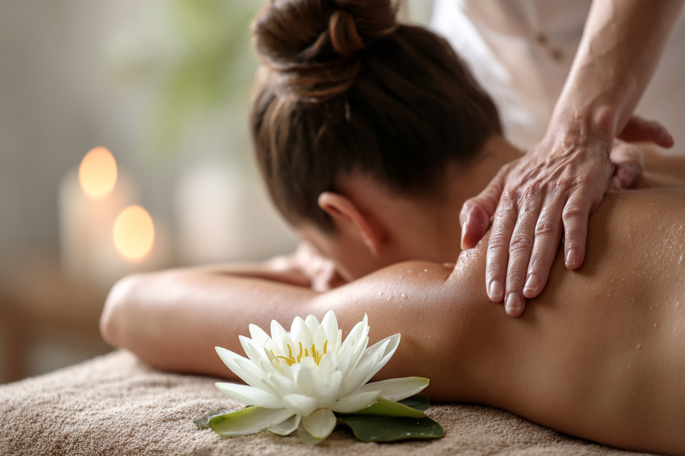
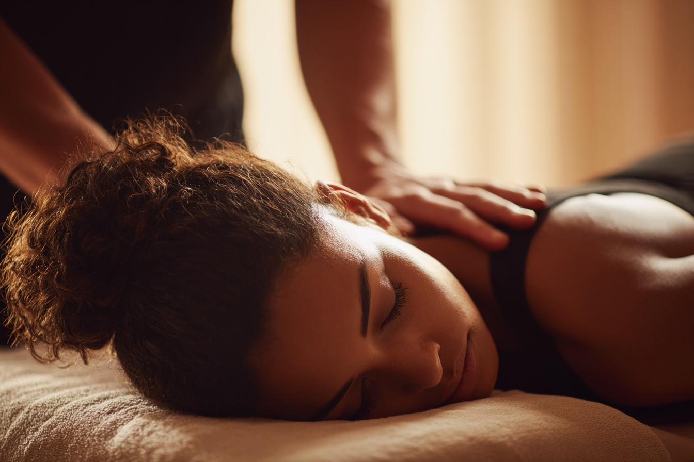

Pocitos · a domicilio
Pedicuria clínica | Masajes | Reflexología
Profesional certificada
Bienestar real para tu cuerpo.
Terapias cálidas, resultados profesionales.
Masaje corporal integral, pedicuria clínica y reflexología podal con enfoque terapéutico. Atención en consultorio o en la comodidad de tu hogar.